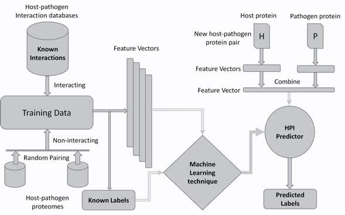

Note: This page will be discontinued. Please visit my new webpage HERE and update your bookmarks.
Issues in performance evaluation for host-pathogen protein interaction prediction by Wajid Arshad Abbasi and Fayyaz ul Amir Afsar Minhas Department of Computer and Information Sciences (DCIS), Pakistan Institute of Engineering and Applied Sciences (PIEAS) Nilore, Islamabad, Pakistan |
||||||||||||||||||
|
The prediction of interaction between proteins is of great biological significance. A number of methods exist in the literature for this purpose. In this work, we investigate the impact of performance evaluation schemes on estimation of true generalization performance of protein-protein interaction (PPI) prediction. We have found that the widely used K-fold cross validation is not well suited for estimating this performance. This is because K-fold cross validation does not limit the degree of sequence similarity between training and test data. We have verified this hypothesis through simulation studies. The complete paper describing our approach has been published in the Journal of Bioinformatics and Computational Biololgy. Here, we present a brief summary of our approach along with supplementary material. The original paper can be downloaded from: http://www.worldscientific.com/doi/abs/10.1142/S0219720016500116. The published paper can be cited as below.
In order to understand the underlying mechanisms of infectious diseases and for developing novel therapeutic solutions, it is important to study the interactions between host and pathogen proteins. Experimental methods cannot be used for studying protein-protein interactions (PPIs) to investigate all possible host-pathogen interactions (HPI) due to constraints of time and cost. Therefore, computational approaches are crucial to support wet-lab methods by predicting promising PPIs. Such computational approaches can assist biologists in focusing on the most likely interactions. Machine learning is one of the computational approaches that can assist biologists by predicting promising PPIs. The general framework that describes the application of machine learning techniques in HPI prediction is shown below.  Framework of machine learning techniques in host-pathogen protein-protein interactions (PPIs) prediction. (Original figure can be obtained from published paper) In machine learning based HPI predictors, a pair of proteins, one each from the host and the pathogen, is considered as a learning example. Experimentally discovered interactions are used as positive examples in training while negative or non-interacting examples are usually generated by pairing host-pathogen proteins randomly. To produce good classifiers, a considerable number of interacting and non-interacting pairs are typically needed. There is a pressing need for accurate HPI predictors. A number of such predictors exist in the literature. However, our primary focus in this paper is the evaluation of accuracy of these predictors. A bias that affects the measurement of the generalization performance of an HPI predictor stems from the fact that, in such predictors, classification examples are pairs of proteins. Machine learning problems involving paired inputs lead to unique challenges in the assessment of accuracy of such techniques as pointed out by the recent papers of Park et al.1 and Hamp et al.2 In this work, we demonstrate the effect of this bias on performance assessment of HPI predictors through K-fold cross-validation by simulation studies. Most existing HPI predictors use a very simple K-fold cross-validation (CV)3 scheme for performance evaluation. However, for HPI prediction a more elaborate analysis is required. This is because simple K-fold cross validation does not take the biological nature of the problem into account. It does not prevent similarity or redundancy between training and testing examples and can lead to inflated accuracy values. We hypothesize that this produces a disparity between the measured accuracy of an HPI predictor and its true generalization performance. This study is designed to test this hypothesis rigorously by carefully performing an experiment related to training and evaluation of HPIs predictors. We have also proposed a protein specific cross validation scheme called Leave One-pathogen Protein Out (LOPO) cross-validation specifically tuned for HPI predictors. In LOPO cross validation, protein pairs with respect to one pathogen protein involved in interactions are taken out for testing and remaining pairs are used for training. A discription of K-fold cross-validation and LOPO is shown in the following figure using a toy dataset.
In this work, we have used two different datasets (Human-HIV and Human-Adenovirus interactions), two different classifiers (A linear Support Vector Machines (SVM)4 and a Random Forest (RF)5), a number of feature representations (k-mer composition6, proFET7, Blosum8 and Evolutionary features9) and different matrices (AUC-PR and AUC-ROC)10 to observe the impact of these choices on the validity of our hypothesis. With the standard K-fold cross-validation for the Human-HIV dataset we observe maximum AUC-ROC scores of 87%. This score is obtained using the Position Specific Frequency Matrix (PSFM) evolutionary features with an RF classifier (see Fig. S1 (c)). However, with LOPO cross-validation, the corresponding score is 53% as shown in Fig. S1 (d). A similar trend is observed for the Human- Adenovirus dataset as shown in Fig. S1 (e-h). We also observed the same effect in PR curves (results are presented in the published paper).
The results presented above lend support to our hypothesis that redundancy between training and testing data of the predictor as consequence of K-fold cross validation can lead to inflated accuracy values. The predictor which was behaving quite well in 17-fold cross validation setting is behaving no better than a random classifier in LOPO cross validation setting. This is because of controlling redundancy at pathogen protein level during training and testing. K-fold cross validation is completely ineffective in controlling redundancy in training and test data for host-pathogen PPIs predictor. In K-fold cross validation, there is an underlying assumption that interactions of both host and pathogen proteins involved in test pair are known during training as pointed out by Hamp and Rost. This assumption is not practical in most interaction studies. The predictor optimized on the basis of this assumption will perform poorly while predicting the interaction of a novel host-pathogen protein pair. Most of the existing studies in the literature involving host-pathogen PPIs predictions use K-fold cross-validation for performance evaluation. Therefore, results from existing techniques may be misleading and should be interpreted with a grain of salt. With the consistency in the differences in results between K-fold and LOPO cross-validation observed over the wide array of models, data sets and performance metrics used in our analysis, we are confident that this phenomenon can be extrapolated to other HPI predictors. We also point out another issue in the evaluation of HPI predictors. Accuracy measures, such as areas under the precision-recall (AUC-PR) or receiver operating characteristic (AUC-ROC) curves, accuracy and F1 score are typically used in the area of machine learning and for presenting the results for an HPI predictor. These measures, though important in the analysis of classifiers, are not directly useful to a biologist who is interested in employing an HPI predictor for designing wet-lab experiments to identify potential interactions. Therefore, we propose three new domain specific metrics in this paper called True Hit Rate (THR), False Hit Rate (FHR) and Median Rank of the First Positive Prediction (MRFPP) which can assist a biologist in experiment design. The results of these metrics are present below in Table 1.
For the human-HIV data set, we obtained a maximum THR of 29% with 3-mer features by using both SVM and RF classifiers. This indicates that the top scoring example for 5 out of 17 HIV proteins (i.e., ~29%) in their corresponding folds in LOPO cross-validation is indeed a positive example. The best value of FHR is 1% which means that, on average, ~1% of negative examples rank higher than the top scoring positive example for any pathogen protein. Similarly, the best MRFPP of 4 reveals that for 50% of the pathogen proteins, a positive example occurs within the top 4 predictions.
|
|||||||||||||||||